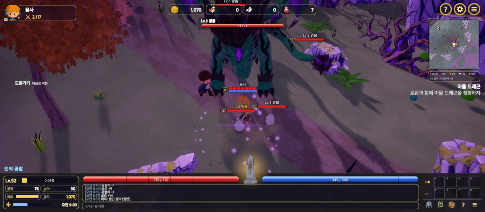
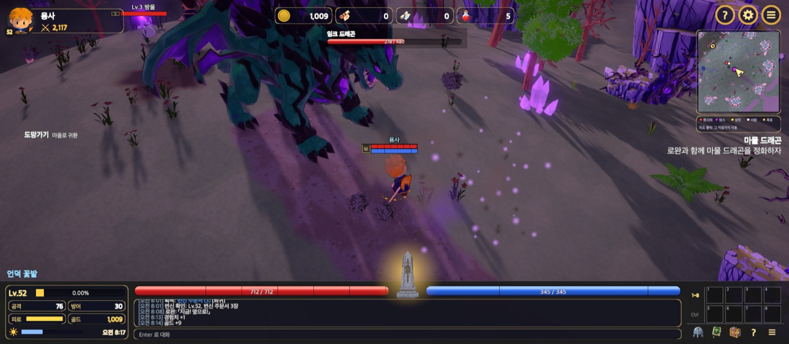
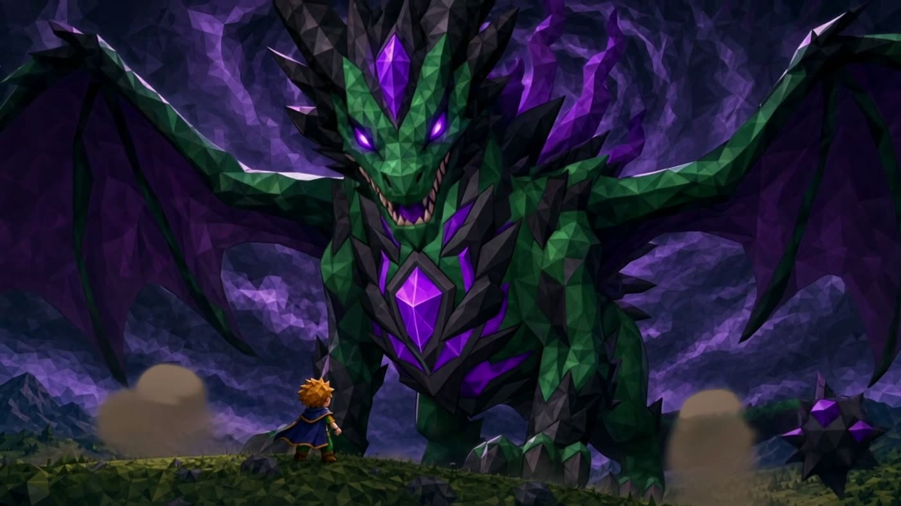
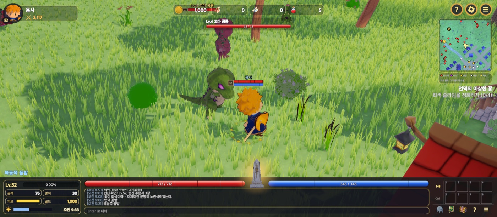
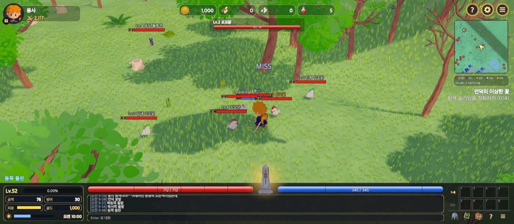
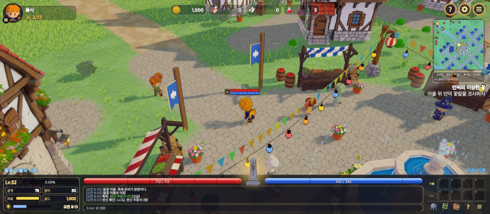
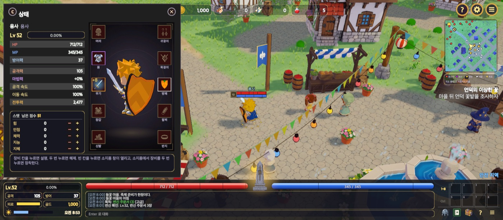
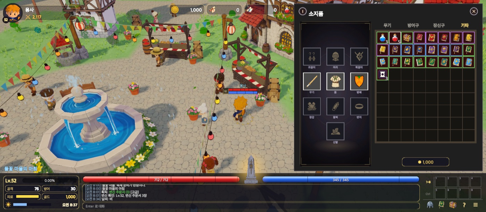

진행 중 프로젝트 · 기준일 2026-11-16
Unity 6 클라이언트와 Rust 게임 서버로 만드는 온라인 3D 액션 RPG. 판정은 서버가 하고, 클라이언트는 서명을 확인한 자동 업데이트로 배포합니다. 설계 결정과 검수는 직접, 구현은 AI 코딩 에이전트가 검사 체계 안에서 합니다.
2026-11-16 저장소 측정
*Rules배포판 v0.7.55 기준
연출 영상 1컷 외에는 플레이 화면 캡처








화면은 2026-10-24 이전 캡처입니다. 이후 바뀐 하단 HUD · 캐릭터 모델은 반영되지 않았습니다.
데이터 → 메모리 → 규칙 → 장면
*Rules 함수, 상태는 싱글턴, 화면 · 입력은 컴포넌트. 규칙은 장면 없이 테스트Rust · 서버 판정 · 2026-10-19 ~
| 날짜 · 경우 | 맵 갱신 평균 / 최대 | 봇 하나가 받는 양 | 끊김 |
|---|---|---|---|
| 10-20 · 500명, 사냥터 8곳에 나눔 | 9 / 20 ms | 6.5 KB/s | 0 |
| 10-20 · 1,000명, 사냥터 8곳에 나눔 | 29 / 42 ms | 8.1 KB/s | 0 |
| 10-20 · 500명, 한 사냥터에 몰림 | 38 / 59 ms | 27 KB/s | 0 |
| 10-22 · 500명 나눔, 기능 추가 뒤 재측정 | 13.4 / 23.3 ms | 11.8 KB/s | 0 |
10-22 이후 새 측정은 없습니다. 네트워크를 거친 측정은 아직 하지 않았습니다.
AI 에이전트(Claude Code)를 단계 · 검사 안에서 운용
2026-10-05 ~ 11-16